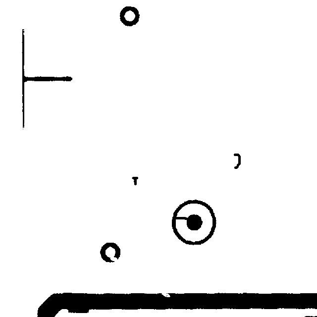

THE ABLATION — MAGNIFY THE LESION

whole board · 640px
→
diff crop · 480px
same model · same defect · only resolution changes
BOARD VERDICTS FROM CROP AGGREGATION
resolution helps —
calibration does not follow